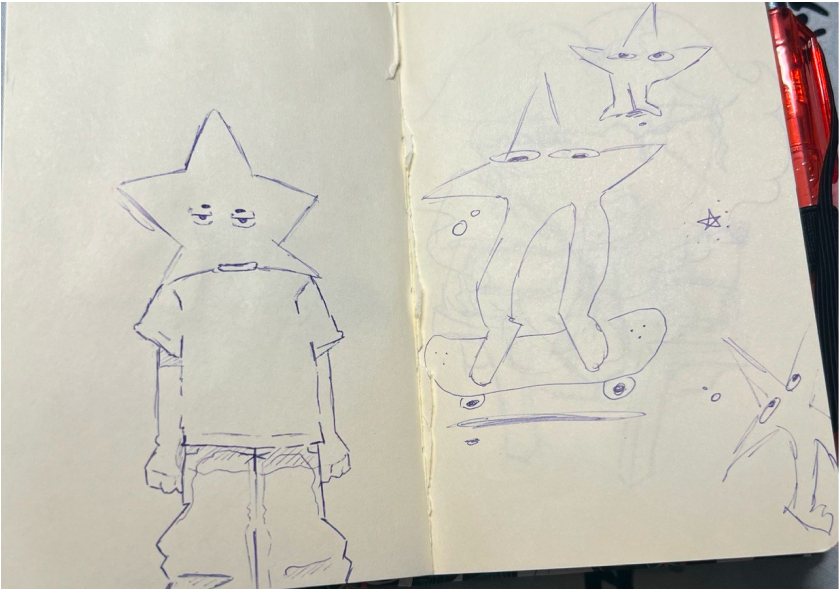
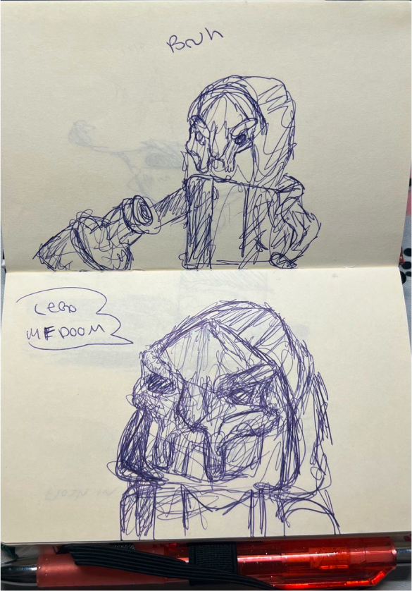
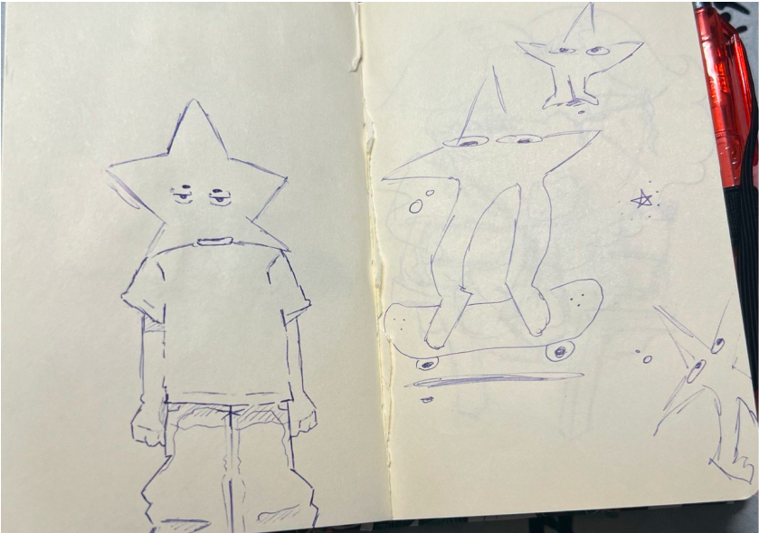
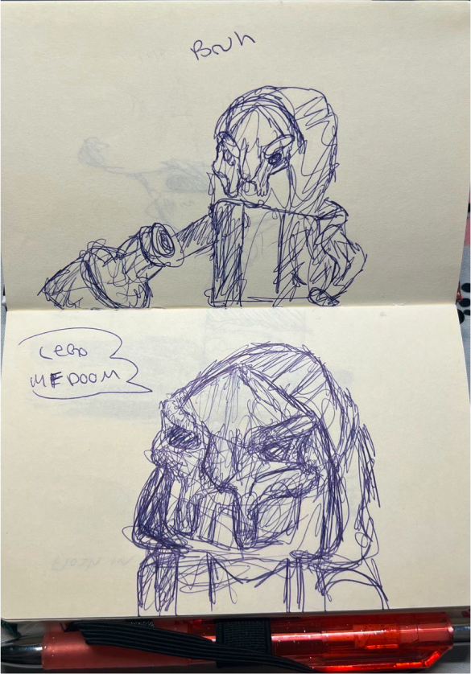
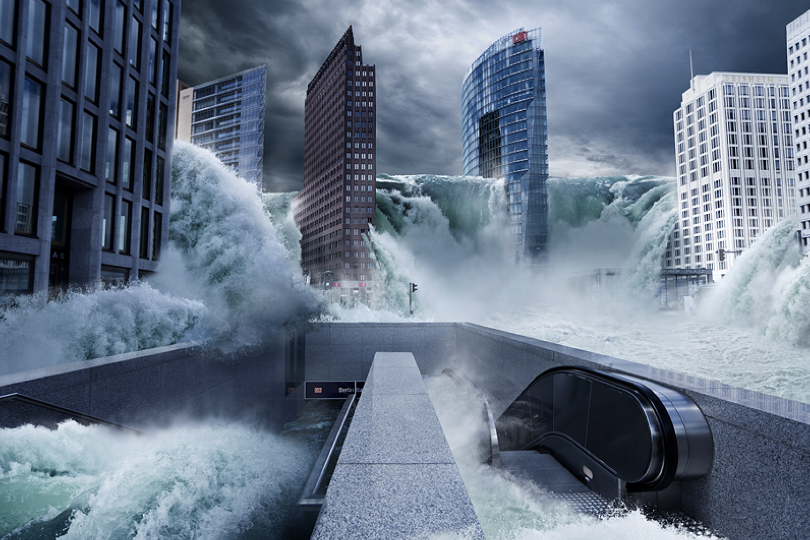
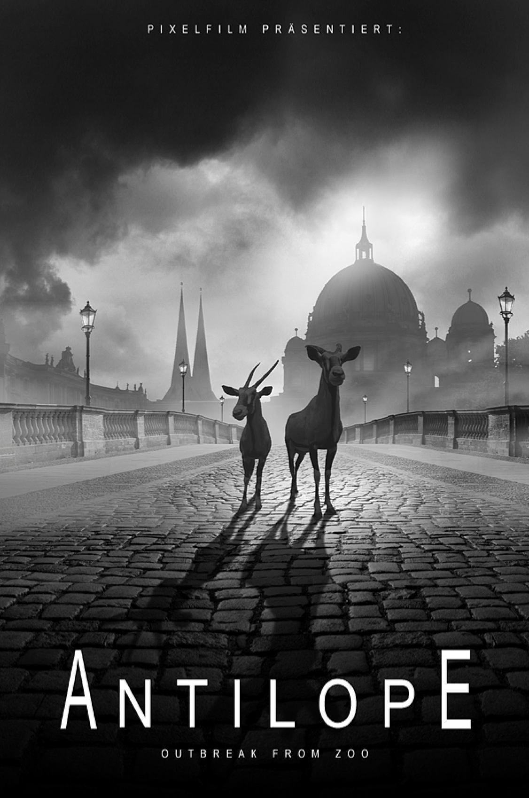
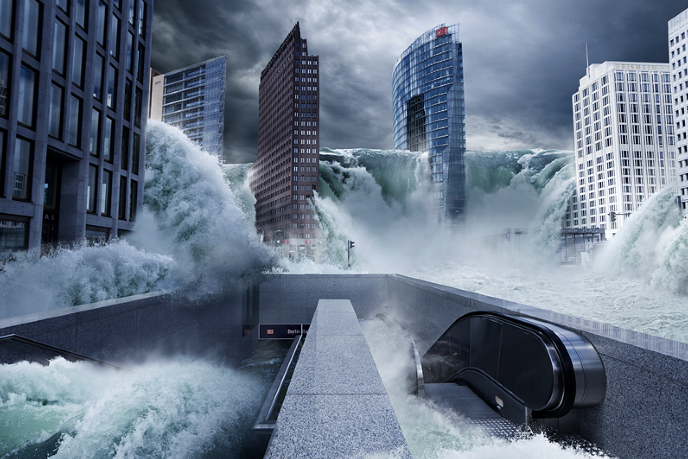
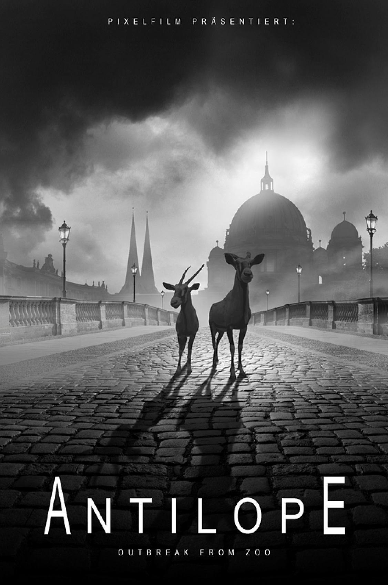

About Me
Ich bin seit Sommer 2023 Technische Assistentin mit Schwerpunkt als Screendesignerin. Seit 2016 entwickle ich mich in einem kreativen Umfeld weiter und strebe stets danach, meine Design- und Programmierfähigkeiten zu verbessern. Meine Leidenschaft gilt Ästhetik und Funktionalität, sowohl im Design als auch in der Programmierung.
 




 


